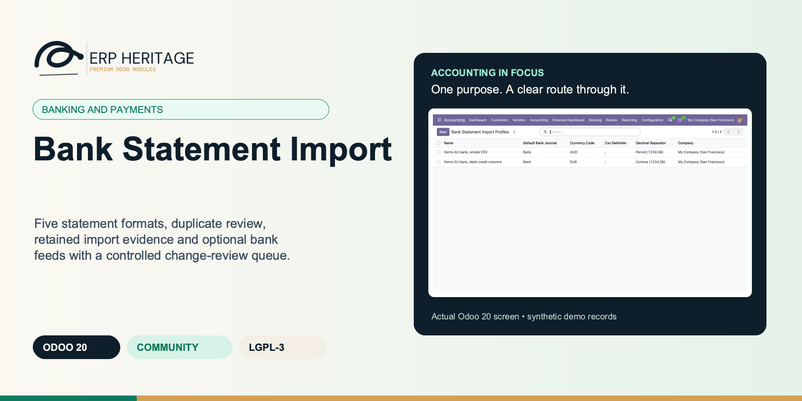
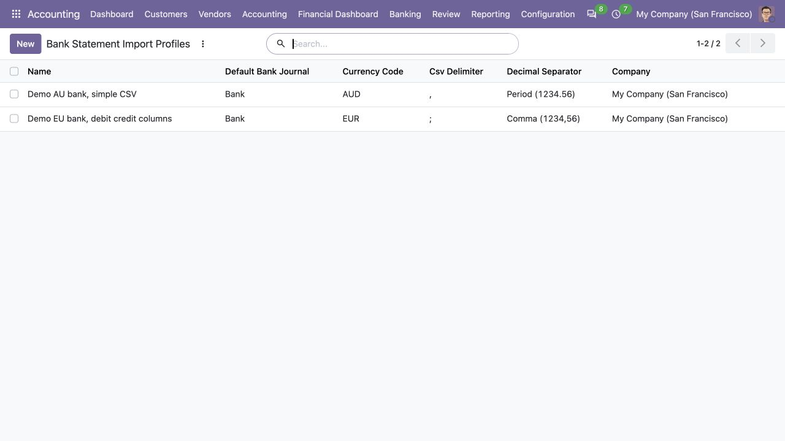
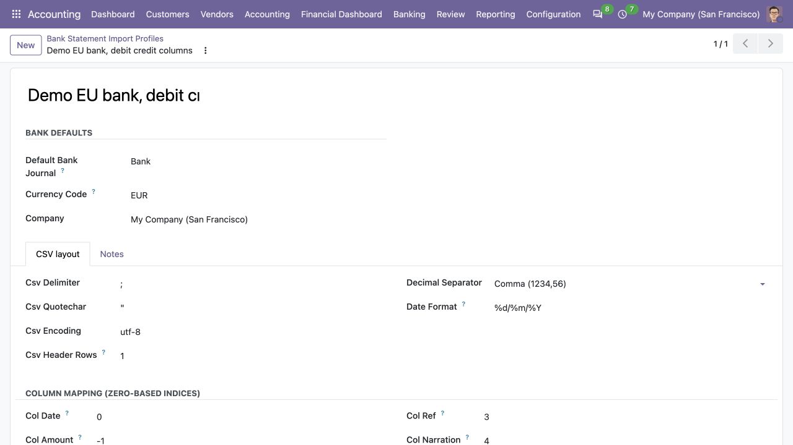
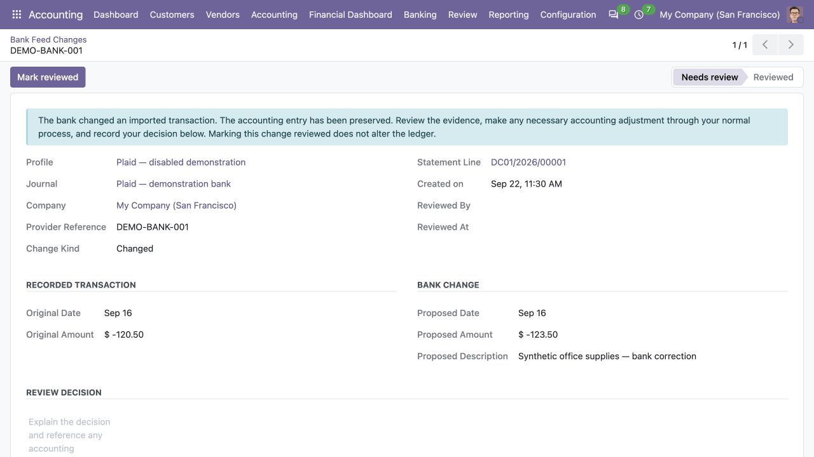

ERP HERITAGE / ODOO 20 COMMUNITY
Five statement formats, duplicate review, retained import evidence and optional bank feeds with a controlled change-review queue.
LGPL-3 · Odoo 20 · v20.0.1.3.11 · Module guide, setup, workflows and rollout checks
The purpose
Bank Statement Import Pro reads bank statement files into Odoo 20 Community bank statement records, ready for reconciliation. It ships five native parsers behind a single pluggable registry: CSV with a per-bank column profile (column mapping, date format, decimal separator, currency), OFX, QIF (Quicken Interchange Format), CAMT.053 (ISO 20022), and MT940 (SWIFT) including the multi-line :86: extension blocks for end-to-end reference and counterparty extraction. New formats are added by registering a parser class, not by forking the importer. The CSV, QIF, CAMT.053 and MT940 parsers use only the Python standard library; OFX import additionally needs the lightweight ofxparse package (pip install ofxparse), imported lazily so the other four formats work without it. Live feeds require a separate provider adapter and credentials. The optional Plaid adapter now gathers a complete update before the importer saves new booked transactions, review evidence and synchronization progress together. Provider changes to existing transactions are reviewed rather than silently rewriting accounting.
Inside Odoo 20
Captured from Odoo 20 Community using synthetic demonstration records. Configuration screens show the available workflow; external service connectivity still requires the relevant provider setup and validation.

Reusable file-import profiles keep bank journal, currency, CSV delimiter and decimal conventions together.
Captured 2026-09-22 from an isolated Odoo 20 Community database with synthetic demonstration profiles. No bank connection or live banking activity is represented.

A companion CSV profile defines bank defaults, encoding, date format and column mapping for a European-style statement file.
Captured 2026-09-22 from an isolated Odoo 20 Community database with a synthetic file-import profile. No provider service was contacted.

Shared importer review screen compares an original transaction with a proposed bank correction. This example requires the optional Plaid adapter; marking it reviewed leaves the ledger unchanged.
Captured 2026-09-22 from the shared base review model using the optional Plaid adapter and mocked HTTP responses. The real ORM workflow created synthetic evidence; no live bank connection, real credentials or external submission was used.
Inside this module
CSV with per-bank column profiles, OFX, QIF, CAMT.053 against the ISO 20022 element tree, and a full MT940 SWIFT parser with :86: subfield extraction, all behind a pluggable parser registry. A new format is a registered class, not a fork.
An exact unique-reference constraint per journal makes re-import idempotent, and a separate fuzzy scan (amount to the cent, 3-day date window, reference and narration overlap) catches the same payment arriving through a second format with a different reference. It flags for review, it never deletes.
Every file import writes a history row (file hash, user, line count, skipped count, outcome) on success, duplicate, or failure, with the exact exception captured on a failed run. Bad rows raise a precise error naming the offending field, never a silent drop.
Re-importing a statement that had a row added or removed elsewhere does not duplicate the unchanged lines, because each line's key is content plus an occurrence counter, never its position in the file. Two genuinely identical rows in one file are disambiguated only by order of appearance.
The same payment imported once via CSV and again via OFX under different per-line references is caught even though the exact-reference guard cannot see it, using a plus or minus 3-day value-date window, amount to the cent, and reference or narration overlap. The line is flagged and a chatter note posted, never auto-deleted.
Comma-decimal CSVs ('1.234,56') are normalised correctly per profile from a decimal-separator field on the bank profile, closing a common source of silent amount corruption between EU and US conventions.
RC and RD reversal marks flip the debit/credit sign an extra time, so a reversed credit becomes a debit to match bank accounting convention, and two-digit YYMMDD dates are century-pivoted at year 80.
Each profile runs independently. For a cursor-based adapter such as Plaid, new statement lines, change-review evidence, status and saved progress form one atomic update. A failed page or failed accounting operation leaves the previous progress available for a complete retry.
The optional Plaid workflow records changed or removed existing transactions in Bank Feed Changes. The review retains original and proposed values and requires review notes. Marking a change reviewed does not alter, delete, reverse or unreconcile the accounting entry.
Pending Plaid transactions are excluded from new statement lines. When a booked transaction identifies an older imported pending line, the importer queues a replacement review instead of booking the amount twice. New booked rows still follow journal, company and currency checks.
From input to outcome
Identify the actual statement format and configure a bank-specific profile when CSV column names or formats vary. Gather statement files, bank journals, CSV column profiles, currencies and bank transaction references. Use a representative case with a known expected result so the team can separate configuration decisions from unexpected behaviour. Keep the supporting commercial or accounting evidence available during review.
Import into the correct journal and inspect accepted, skipped or flagged transactions before using them in reconciliation. Follow the record’s available actions in the order intended by the workflow. Review the selected company, relevant dates and any validation messages before continuing. If the source data changes, reassess the result against the updated evidence.
The OFX from the US bank, the CAMT.053 from the EU bank, the MT940 from the SWIFT bank, and the CSV from the AU bank arrive through separate routes, and the registry picks the right parser per file. A comma-decimal European CSV ('1.234,56') is normalised correctly from the bank profile, so no amount is silently corrupted. One bank's CSV had a row inserted since last week, but because the per-line key is content plus occurrence counter and never file position, the unchanged lines do not re-import. A wire that came through both the CSV and the OFX feed under two different references is flagged as a probable cross-source duplicate for the operator to confirm, not deleted. One file has a malformed row: it raises with the offending field named, the failure is written to the import history log with the exception text, and the other four files still post clean.
Reimport a representative file in a test database to review exact duplicate handling and investigate likely cross-source duplicates. Compare the outcome with the expected treatment for this case and record the reason for any difference that requires follow-up. Give exceptions an owner so they do not disappear inside a period-end spreadsheet.
Retain the import evidence and profile ownership; confirm extra parser requirements or connector adapters for the formats and feeds used. Include the accepted operating example, configuration choices and unresolved dependencies in the handover. Review them when business policy, source data or the surrounding Odoo applications change.
Install the intended optional adapter and bind its profile to the correct company, bank journal and provider account. For Plaid, the first successful run applies the configured starting date to new imports, then saves the returned progress. Later updates resume that progress and process backdated changes. If a page or materialisation fails, review the error and retry from the retained progress; partial provider pages are not saved as a successful update.
Open Bank Feed Changes from the banking menu or the profile’s review action. Compare the original statement and accounting references with the provider’s proposed amount, date or removal. Decide what accounting work is necessary through normal authorised workflows. Record the decision in Review notes, then mark the change reviewed. That acknowledgement records the reviewer and time; it does not itself correct, reverse, delete or unreconcile accounting.
Business situations
Bank Statement Import is relevant to bookkeepers and bank-data administrators who need to answer this question: Can bank transactions enter Odoo with clear import evidence and sensible duplicate handling? Start with the process that creates the decision, identify its owner and agree what evidence the reviewer needs. A narrow pilot helps the team evaluate the supported workflow using its own accounting data before broadening access.
Use the module’s banking and payments role as one part of a controlled close. Bring the relevant statement files, bank journals, CSV column profiles, currencies and bank transaction references to the review, then explain the result alongside the business event it represents. Establish which outputs become part of the reporting pack and which outstanding matters need a separate accounting decision.
Turn the business question into an acceptance case: Can bank transactions enter Odoo with clear import evidence and sensible duplicate handling? Use one ordinary example and one relevant exception from the supported scope below. Ask the intended operator to prepare it and the reviewer to explain the result. Retain that accepted example with the deployment notes so future changes can be assessed against an understood process.
Before the first result
Confirm that the organisation needs the supported banking and payments process described here. Identify the responsible bookkeepers and bank-data administrators and write down the decision they expect the module to support. Use the limitations section to separate shipped behaviour from an integration, professional judgement or operational service that needs another owner.
Prepare statement files, bank journals, CSV column profiles, currencies and bank transaction references. Check the relevant records in the intended company and use dates that match the business event. Resolve missing accounting configuration before evaluating calculated output; plausible-looking totals do not establish that the chosen inputs or policies are correct.
This module declares Accounting Suite Base as part of its installation foundation. Its direct standard-Odoo dependencies are account. Review the actual dependency set in the target database before a rollout, especially where another addon also extends the same accounting models, menus or posting actions.
Define who operates Bank Statement Import, who reviews unusual results and who maintains configuration. Run the representative workflow below in a test database using the intended users. Confirm that users can reach the work they own and that the reviewer understands the available evidence before moving the process into live operation.
Appoint someone to inspect Bank Feed Changes as well as successful import counts. A successful fetch can contain new booked rows and unresolved changes to old rows. Configure and test the provider account separately; the base importer supplies adapter placeholders, while the optional Plaid, Basiq and GoCardless packages supply their respective transports. Provider access, consent, coverage, commercial terms and live acceptance remain deployment responsibilities.
Workflow reference
Duplicate handling is two layers. First, exact per-line idempotency: file and live-feed corridors share one journal-scoped bank-reference key, while lines with no bank reference receive a stable content key. A database constraint means re-importing the same transaction through the same or other corridor skips the line instead of doubling it. Second, a fuzzy cross-source scan catches likely matches whose providers use different identifiers, keyed on journal plus amount to the cent plus a 3-day value-date window plus reference and narration substring overlap. The fuzzy match only flags (it records the suspected original on the line and posts a chatter note), it never blocks or deletes either side, so the operator decides.
Every file import writes a row to the import history log (file hash, user, line count, skipped count, outcome) whether the run succeeded, was a duplicate no-op, or failed, so failed and skipped imports stay in the audit trail with the exact exception text. Bad rows are explicit: a parser raises a precise error naming the offending row, tag, or field, and the wizard records it as an audited error rather than silently dropping data.
The importer owns connector profiles, journal binding, scheduling and statement creation. Provider placeholders in the base package are replaced by separate optional transport modules. Profiles run with independent failure handling. Plaid returns a complete cursor-based update: the importer saves eligible new booked rows, immutable provider-change evidence and the new cursor together. Basiq and GoCardless retain their own adapter contracts. A configured profile or a scheduled run does not establish live-bank acceptance.
Multi-company aware: profiles and statements are scoped through the bank journal, which carries the company. Pairs with the reconciliation workspace that sits on top of the imported statements.
A profile retains its starting date and latest imported date. With the optional Plaid adapter, durable provider progress owns incremental synchronization after bootstrap. Later updates can include backdated booked transactions or changes to already imported records, so the latest date is not used to discard valid incremental history. Progress is saved only with the complete imported result and review evidence.
Partner resolution batches contact lookups by unique name, so a 5,000-line CSV does not fire 5,000 separate queries on import.
CSV with per-bank profiles, OFX, QIF, CAMT.053 (ISO 20022), and MT940 (SWIFT, with :86: extension blocks). Format dispatch lives in a registry; partner packages add formats by registering a parser class.
A unique constraint on (journal, line import reference) means re-importing the same file skips the lines already seen on that journal instead of duplicating them.
A second scan keyed on journal, amount to the cent, a 3-day date window, and reference or narration overlap flags probable duplicates that the exact guard misses, recording the suspected original and posting a chatter note without deleting.
Each successful import pins the exact uploaded bytes to every created statement and an append-only audit row; multi-statement CAMT files remain one atomic import with every statement linked.
Parsers raise a specific error naming the offending row, tag, or field, and the wizard records it as an audited error rather than silently dropping the row.
The currency code reported by the file (CSV profile, OFX, QIF, CAMT.053, MT940) is parsed onto the imported lines, and a file whose currency does not match the target journal is rejected with an audited error instead of booking at face value.
The importer owns connector profiles, journal binding, scheduling and statement creation. Provider placeholders in the base package are replaced by separate optional transport modules. Profiles run with independent failure handling. Plaid returns a complete cursor-based update: the importer saves eligible new booked rows, immutable provider-change evidence and the new cursor together. Basiq and GoCardless retain their own adapter contracts. A configured profile or a scheduled run does not establish live-bank acceptance.
Profiles and statements are scoped through the bank journal, which carries the company, so the importer respects company boundaries by construction.
The provider’s transaction identifier is retained with the journal-scoped import key. Repeated unchanged references do not create additional statement lines. When the optional Plaid adapter reports a changed or removed existing reference, the new evidence is queued for review while the original accounting remains unchanged.
Stable per-line idempotency key built from the row content (date, amount, reference, narration) plus an occurrence counter that distinguishes genuinely identical rows in the same file. It does not depend on the row's position, so re-importing the same statement, or one with rows added or removed elsewhere, does not duplicate transactions on the same journal.
When the import wizard's fuzzy duplicate scan flags this line as a probable duplicate of an earlier line, the match is recorded here. The line is NOT auto-deleted: the operator confirms, because two payments with the same date and amount can be legitimate.
The initial history boundary for a new provider import. Date-window adapters use it according to their contract. For Plaid, new initial rows before this date are excluded; subsequent saved-cursor updates accept valid backdated booked transactions. Changing provider credentials or binding changes the synchronization scope and starts a fresh provider read rather than reusing another account’s progress.
Manager recovery control. Allows this exact file to be imported again only when its prior successful statement was deleted. Existing statements and line-level duplicate keys remain protected.
Illustrative implementation exercise. A bookkeeper downloads a statement on Monday and receives a corrected delivery on Tuesday. Import the first file into the correct bank journal, then inspect its transaction references and totals. Reimport a representative transaction in a test database to see exact duplicate handling. Do not assume every bank or feed uses the same transaction identifier. Add a second-source example with a different identifier but a similar amount, value date and narration. Review whether it needs fuzzy-duplicate investigation rather than automatic removal. For CSV, include a decimal-separator or date-format variation. Keep the accepted profile and import outcome with the bank’s original file so reconciliation begins from traceable input.
A bank sync can add a new booked transaction and also report a correction to an earlier payment. The new booked row is imported under the journal’s normal checks; the correction becomes a separate review. Inspect the review count as well as the last-run status. This distinction prevents a successful transport result from being mistaken for a completed accounting decision.
When Plaid removes a reference that is already present in the journal, retain the original statement line and accounting entry. Inspect whether the movement was reconciled, whether the bank issued a replacement and which normal correction process applies. Add review notes explaining that decision. Marking the review acknowledged records who accepted responsibility and when, while leaving the ledger untouched.
In a test database, use a two-page provider update and make the second page fail. Verify that neither the first page’s rows nor new progress becomes durable. Repeat with a failure after statement materialisation and confirm rows, reviews and progress roll back together. Then retry the same complete update and inspect journal totals and duplicate guards. These are acceptance exercises for the adapter and importer together, separate from live provider certification.
Questions before rollout
It is designed for bookkeepers and bank-data administrators. Its central business question is: Can bank transactions enter Odoo with clear import evidence and sensible duplicate handling? The listing describes the shipped operating scope and the decisions that remain with the organisation. Evaluate it against your own records and review process, rather than treating the module name as a promise to cover every scenario in that accounting area.
Have statement files, bank journals, CSV column profiles, currencies and bank transaction references ready, together with the person who owns the related accounting policy. Identify the actual statement format and configure a bank-specific profile when CSV column names or formats vary. A known example makes it possible to check the result and resolve configuration questions before the process is repeated across more records or companies.
Reimport a representative file in a test database to review exact duplicate handling and investigate likely cross-source duplicates. Keep the relevant source evidence with the output and be explicit about company, date and policy choices. The most useful review asks whether the result follows from the business inputs, not only whether the operation completed without a validation message.
It belongs to the banking and payments family. Its declared custom dependency foundation is Accounting Suite Base. Installing the complete suite also brings other operating and specialist modules; using this focused module should be evaluated against its own dependency list and scope. Optional services still need their own configuration and agreement where applicable.
OFX import runs on the third-party ofxparse Python package, which is not bundled. Install it once with pip install ofxparse, or let a repo-level requirements.txt install it for you (for example on Odoo.sh). CSV, QIF, CAMT.053, and MT940 need no extra packages. Retain the import evidence and profile ownership; confirm extra parser requirements or connector adapters for the formats and feeds used.
No. Bank Statement Import provides the specific records, calculations or workflow described in this listing. The organisation remains responsible for its source information, accounting choices, supporting evidence and review. Where the process uses an estimate, a contract assessment or an external service, appoint the appropriate owner before relying on the output.
No. The importer provides file formats and a connector framework. Live transport is supplied by separate optional provider modules. You must arrange the provider account, permissions and credentials, confirm coverage for the intended institution, and validate the live service. Provider fees or other commercial terms may apply.
Existing statement lines and their accounting entries remain unchanged. The sync creates evidence in Bank Feed Changes for a human decision, including an original and proposed comparison where available. Review notes are required to mark the change reviewed. Acknowledgement records the decision and reviewer but performs no accounting correction or deletion.
New pending provider rows are excluded from bank statement creation. A later booked row can be imported. If it links to a legacy pending row already imported by an older workflow, a replacement review is created so the same movement is not booked again automatically.
The Plaid adapter collects all pages of a complete update before materialisation. Invalid response data, non-advancing progress, exhausted pagination or a failed page aborts the update. The importer saves statement rows, review evidence and cursor together; a failure retains the previous durable progress for retry. Provider mutation during pagination restarts the complete read from that original progress within a bounded retry limit.
Scope and requirements
OFX import runs on the third-party ofxparse Python package, which is not bundled. Install it once with pip install ofxparse, or let a repo-level requirements.txt install it for you (for example on Odoo.sh). CSV, QIF, CAMT.053, and MT940 need no extra packages.
The base live-connector framework ships provider placeholders. Separate optional Plaid, Basiq and GoCardless modules supply HTTP transports. The Plaid cursor and change-review behaviour described here requires its optional adapter; it is not a claim that every provider shares that lifecycle.
The live-connector fetch path records its result on the connector profile and its chatter, but does not write a row to the file-import history log. The history log covers file imports.
Import logs and exact source attachments are immutable. Deleting a recoverable statement keeps its source bytes under the audit record; legacy pre-1.3.10 imports retain hashes but cannot have missing historical bytes reconstructed.
PDF statement ingestion is on the roadmap and is not shipped. The five parsers are CSV, OFX, QIF, CAMT.053, and MT940.
MT940 is fully implemented and selectable, but does not yet have a dedicated automated test.
Provider corrections, removals and legacy pending replacements are review-only. Acknowledging the review never rewrites, deletes, reverses or unreconciles an accounting entry.
Plaid pending rows are excluded from new statement lines. The configured starting date applies to initial new imports; later cursor updates may introduce valid backdated transactions.
Provider credentials, account consent, institution availability, commercial terms and live-service acceptance are separate deployment requirements. Automated tests use simulated provider responses; no live provider acceptance is claimed.
Standards references describe the accounting subject addressed by the module. They do not establish certification, statutory filing acceptance or suitability for every jurisdiction. Your finance team owns its assumptions, accounting policies and review.
Installation scope
Odoo installs the following direct dependencies automatically. Additional dependencies can be brought in by those modules. Related modules in the wider catalogue are optional unless they appear in this dependency chain.
Shared reporting engine for the ERP Heritage Odoo 20 Community accounting suite, providing a reproducible report-execution audit log and a move-version result cache. Append-only audit log of every report render with user, timestamp, the full options snapshot, runtime, and a SHA-256 result hash for XLSX and PDF output, plus a multi-company analytic-aware parameterised SQL builder with no raw user input in SQL, a three-tier User/Manager/read-only Auditor privilege model, and a currency-aware XLSX writer. Odoo 20 Community accounting reporting engine, reproducible financial report audit trail, move-version report cache invalidation, multi-company parameterised SQL builder, append-only audit log, read-only auditor role, SHA-256 report hash compliance, currency-aware XLSX export, analytic-aware journal item aggregation.
Included dependency: eh_account_base. The shared reporting engine under the ERP Heritage accounting modules: an append-only render audit log, precise per-company cache invalidation, and a whitelist-only parameterised SQL builder.
Odoo Community dependency required by this module. Its own dependencies and configuration remain part of the installation scope.
Acceptance guide
The following are recommended rollout checks, not claims of additional built-in features. Apply the checks relevant to this module and retain evidence of your own results.
Select a recent, closed period that your finance team understands well. Keep its approved source documents, ledger totals and existing working papers available. Reproduce that period in a staging database before working on current transactions. A familiar period makes differences visible: you can distinguish an opening balance problem from a configuration choice, a timing difference or a genuine defect. Agree which person owns each discrepancy and what evidence will close it. Successful installation is the starting point; a repeatable business outcome is the acceptance criterion.
Write down the output your team needs from this module: a reviewed transaction, an exported file, a reconciled balance, an approved schedule or an operational queue. Identify who prepares it, who reviews it and who relies on it next. Make the scope concrete with one company, one reporting period and a small representative document set. Include an ordinary case and an exception. This keeps the evaluation focused on the business decision instead of the number of available screens, and gives reviewers a consistent way to compare the new workflow with their current process.
Use the Odoo 20 edition of the module and its dependencies together. The manifest defines what Odoo installs automatically; a feature mentioned elsewhere in the wider product family is not automatically included. Review the dependency guide on this page before enabling the complete suite, especially where your deployment also uses Sales, Purchase, Inventory or website components. Confirm that your hosting arrangement accepts custom server modules and their Python requirements. Keep a copy of the installed module versions with your acceptance record so a later update can be checked against the same baseline.
Check the companies, currencies, fiscal periods, journals, accounts and partner records used by your sample. Confirm that account purposes agree with your chart of accounts and that archived records are not being selected inadvertently. Review company-specific settings while the intended company is active. Where a workflow needs bank details, analytic dimensions, product information or payment terms, validate those inputs with their owner. Clean master data reduces repeated exceptions and makes it easier to investigate the exceptions that remain. Keep the preparation list short enough for someone else to repeat it.
Decide which source establishes the opening position before introducing new transactions. Save the source date, company, currency and supporting reconciliation. If a module maintains a schedule or a working-paper balance alongside the ledger, document how that opening amount should tie to the general ledger. Do not use balancing entries to hide a difference during the pilot. Classify the difference, correct its source and rerun the comparison. The resulting trail is useful both for your internal reviewer and for support if an unexpected calculation needs investigation.
Choose named users for preparation, review and administration. Confirm their practical access by signing in as those users in staging, rather than relying on an administrator's view of the menus. A visible menu does not replace model access or record restrictions, and a hidden menu does not by itself prove that data is protected. For your own acceptance check, verify the specific business operations each role needs. If your organization requires separation of duties, include that policy in the rollout criteria and check the actual workflow against it before granting production access.
Run the sample with the intended company selected, then repeat the relevant navigation and search checks as a user assigned to a different company. Record which company owns each source document and each generated result. For users who work across entities, confirm how their allowed-company selection affects totals and available records. Investigate any cross-company difference before it becomes a month-end problem. Group-level work and company-level work have different scopes; use the appropriate module and document the scope on the review evidence instead of assuming one screen represents both.
Include a company-currency case and, where relevant to the module, a foreign-currency case. Check the date used to select exchange rates and keep the rate source available to the reviewer. Add a transaction near a period boundary so the team can see whether document date, accounting date or another business date drives the result. Test decimal precision with a small amount as well as a large one. Record the expected rounding treatment. These checks turn vague differences in totals into questions that can be resolved against your accounting policy.
Choose one result and follow the available links or record references back to the original business document. Compare its company, partner, amount, currency and dates with the expected source. Where the workflow creates a journal entry, inspect the accounts and balancing lines before relying on an aggregate report. Where it exports a file, compare the file's records with the selected batch. Save a small, intelligible evidence set instead of an indiscriminate screenshot archive. A reviewer should be able to explain what happened without needing the original preparer beside them.
If this module creates or updates accounting entries, separate preparation from the decision to post in your operating procedure. Inspect the proposed outcome, resolve missing configuration and confirm the intended period before using a posting action. If the module does not post entries, identify the equivalent commitment point, such as sending a file or approving a review record. Record who is allowed to make that decision. The page describes the module's supported workflow; your team still needs an operating policy that fits its accounting responsibilities and approval structure.
From pilot to production
Use a deliberately incomplete sample in staging: a missing required setting, an unsuitable date or a source document that is not ready for the next step. Observe the actual message and the record state that remains. Correct the input and repeat the operation. Check that the recovered result agrees with the ordinary successful case. For transactions already committed, use the supported correction or reversal workflow rather than editing database records. Your acceptance record should explain how staff recover from mistakes, because that is part of day-to-day usability, not an unusual administrative task.
Repeat an import, calculation, preparation step or button action only where the documented workflow permits it. Confirm whether the expected behavior is a recalculation, a refusal, a new version or reuse of an existing record. Do not infer universal duplicate prevention from one successful test. Record the behavior of the actual operation your team will use and include it in staff guidance. A small, identifiable sample makes duplicate records easy to spot and avoids creating a misleading acceptance result from a large batch with poorly understood contents.
Where accounting dates are involved, inspect your company's lock settings and the role that can change them. Include one sample dated inside a closed period and one in the open period, then observe the supported behavior with normal finance access. Agree how the team will handle late documents and approved corrections. The goal is a clear route for legitimate work that preserves the reason the period was closed. Record the policy alongside the module's workflow so operators know when to stop and involve the person responsible for the close.
If the module produces reports or exchange files, have the intended recipient inspect a sample. For a finance report, check the filters, company, dates, currency, labels and totals. For a bank or service file, use that recipient's own validation or test process before a production submission. Generating a structurally valid file does not establish acceptance by every provider. Keep the exact sample and any recipient feedback with the rollout record. Where no export is provided, agree which supported screen or linked record serves as the handover evidence.
Identify any step that depends on a separately configured provider, connector, credential or commercial service. Confirm the exact adapter and its requirements before scheduling a live demonstration. Some family modules provide deterministic rules or file preparation without a live external connection; their usefulness should be evaluated on that basis. Test a provider failure in staging only when the adapter offers a safe test route. Make it clear who manages credentials and provider subscriptions, and who should be contacted when an external service is unavailable.
Time the operations your staff will actually repeat, using a dataset that resembles your expected company, date range and document volume. Record the environment and sample size beside the timings. Include navigation, filtering, preparation and review rather than quoting a single best-case page load. This page makes no universal performance promise: network latency, database size, customizations and infrastructure affect results. Use measurements to choose a practical rollout batch size and to identify any operation that needs investigation before more users join the workflow.
Give staff a short exercise that begins with a business situation and ends with a reviewed result. Include the expected amount or state, the navigation route, the point at which a reviewer becomes involved and the supported correction route. Let operators explain why their result is correct. Add only the settings and exceptions relevant to their role. A concise internal playbook built from your own pilot is easier to maintain than a large collection of unannotated screenshots, and it helps new users understand the relationship between this module and the rest of Accounting.
Capture the module version, Odoo version, affected company, operation, exact message and a minimal sequence of steps. Use redacted sample documents when sharing evidence outside your organization. State the expected result and the actual result separately. Include the date filters and role used, because the same record can look different with another scope or set of permissions. Never include passwords, API tokens or private keys in a support message. Good reproduction details allow the problem to be investigated without guessing at your business setup or asking staff to repeat a full close.
Before deploying an update, back up the database and filestore together, and restore that backup into an isolated environment. Apply the module update there, then repeat the key pilot scenarios using the saved acceptance record. Check that existing documents remain readable and that the expected actions and menus still lead to the right workflow. Include one newly created record as well as an older one. Keep a rollback plan appropriate to your deployment and confirm that the backup can be restored before scheduling the production change.
Agree the release criteria before the pilot ends: expected financial results, access boundaries, supported corrections, output acceptance and owner sign-off. List unresolved items with their business impact instead of treating every observation as a blocker or dismissing it as cosmetic. Start production with a manageable scope and a named reviewer. Keep the first cycle's evidence so that later enhancements can be assessed against a concrete baseline. App-store descriptions help you select and understand the module; acceptance in your own configuration establishes whether the workflow is ready for your team.
Connected capabilities
These related modules explain how this workflow connects to the wider accounting process. Only the dependencies declared above are installed automatically. Choose optional additions for a specific business need.
The shared engine that powers the ERP Heritage accounting modules for Odoo 20 Community. It auto-installs as a dependency of any ERP Heritage accounting module, so you do not need to install it by hand.
Run a single batch instead of N individual payments. Open the build wizard, pick the open invoices or vendor bills to clear, choose whether to aggregate, and the wizard creates one draft payment per source or one net payment per compatible partner, receivable/payable account, currency and reviewed recipient bank. The source's payment/vendor reference and bank account are carried into the instruction. Pre-existing draft payments can join a draft batch from the Batch field on the payment record.
Post dated cheques are part of normal trade in many markets, and Odoo Community has no native handling. This module makes the cheque a real record, not a memo note on a payment. Issued cheques (vendor pay) and received cheques (customer collect) live on one model with a direction flag and a guarded lifecycle: draft, registered, presented, cleared, bounced, replaced, cancelled. Each transition stamps the user and timestamp and is blocked unless the state machine allows it.
Bank Reconciliation Pro gives Odoo 20 Community a reconciliation experience built around a scored suggestion engine and a tamper-evident audit trail.
SEPA Credit Transfer builds ISO 20022 credit-transfer files for posted vendor-payment batches. Each batch explicitly opts into SEPA controls; merely configuring an originator never changes ordinary outbound batches. PAIN.001.001.09 is the default for new originators, while .03 remains available for banks that still require it.
SEPA Direct Debit for Odoo 20 Community collects EUR payments from customer bank accounts via the SEPA Direct Debit scheme. It pairs with the Recurring Invoices module for subscription collection and with Batch Payment for ad-hoc collection runs.
ERP Heritage Community Accounting Pro installs a fixed collection of 50 direct accounting dependencies. Together with the suite itself and the transitive EH EDI Core foundation, its custom-module closure contains 52 modules. The collection brings reporting, reconciliation, payments, receivables, approvals, specialist accounting, group work and close controls into one Community installation. Its value comes from connecting those processes and their evidence; adoption still requires deliberate company configuration, accounting ownership and review. Australian BAS is available separately and installs the suite as its accounting foundation.
Plan the surrounding workflow
The following playbooks explain adjacent work in named companion modules. They are included here to help you plan the handoff around this module. Each companion is labelled as an installed dependency or an optional addition. These capabilities belong to that named companion, not to the standalone module you are reading about.
Optional companion; requires separate installation
A modern, scored bank reconciliation workspace for Odoo 20 Community, with an append-only audit trail.
Candidates are ranked by amount, date proximity, partner, reference token overlap, and 90-day history, with a per-signal confidence breakdown surfaced in the workspace. The operator sees why a match was suggested before confirming it.
Every match records the user, time, confidence, rules fired, and whether it was an accepted suggestion or a manual override. The rows refuse write and unlink at the model level, so the decision trail stays intact.
LGPL-3 source on disk. No activation key, no phone-home, no recurring licence. Read it, extend the engine through inheritance, override individual heuristics for your bank memo conventions.
The original posted statement move remains untouched. A new balanced, sealed adjustment carries company and transaction currency on both legs; locked dates fail before a move is created.
Suggestion provenance is recomputed on the server, session counters update atomically, and a narrow advisory lock serialises only duplicate opens for the same user and journal.
Only a proven zero-foreign, non-zero-company remainder can use FX gain or loss accounts, under a hard server-owned cap. Unconfigured accounts or ordinary bank variance are refused.
Rules, journals, accounts, partners, candidates, and history are constrained to the active company. Invalid regexes, amount bands, and cross-company targets fail closed.
Search by reference or partner, filter by direction and date, and page through the complete open-line population. Candidate search also covers registered-payment outstanding accounts.
Automatic match rules still respect ambiguity and, by default, exact-amount checks. A configured rule may bypass the score threshold, but tied candidates stay for review. Each accounting decision, audit entry and session counter commits or rolls back together.
Review this companion’s own setup and scope before connecting the workflows. Keep the company, reporting date and business document references consistent at the handoff.
Optional companion; requires separate installation
Run one customer-receipt or vendor-payment batch with partial settlement, mixed-currency support on company-currency journals, reviewed recipient banks and an exact pre-post CSV preview.
Posting is atomic. A closed period, invalid payment or reconciliation failure rolls the whole attempt back, leaving every member unposted and the reviewed batch confirmed for correction.
The batch creates and posts standard Odoo payments with only a nullable batch link added. Reconciliation, the vendor ledger, partner follow-ups and reporting already understand the output.
One EH Accounting Manager confirms and freezes the batch. A second, different EH Accounting Manager must post it. This maker-checker separation is intentionally not configurable.
Every member either posts and reconciles successfully or the complete attempt rolls back. The batch remains confirmed when correction is required.
Confirmation freezes payment inputs and the exact CSV rows. Posting refuses changed or malformed approval evidence.
The build wizard refuses source documents outside the batch company and validates the journal, direction and currency.
A source document with a live draft payment claim cannot enter another batch, closing the double-pay and double-collection window.
A posted batch is corrected with verified counter-entries. Original posted cash moves and their audit evidence remain immutable.
Review this companion’s own setup and scope before connecting the workflows. Keep the company, reporting date and business document references consistent at the handoff.
Optional companion; requires separate installation
The spreadsheet month-end close, moved into Odoo with a real sign-off chain and a segregation-of-duties gate.
The preparer cannot request review. The reviewer cannot approve. A third, different Accounting Manager performs final sign-off. These are named server-side refusals, not a policy note in a manual.
A run copies the template into independent per-run task instances. Editing this period never mutates the template and never reaches back into a prior closed run. The append-only sign-off history survives every reopen cycle.
LGPL-3 source on disk. No activation key, no phone-home, no recurring licence. Tasks and sign-offs are queryable, exportable records with server-owned audit anchors. Free today, free at renewal, because there is no renewal.
Clicking Mark Done on an already-done or not-applicable task is a no-op that preserves the original signer and timestamp. The audit trail cannot be quietly overwritten by a second click, and a regression test guards the prior bug where the check compared against a non-existent state.
Optional tasks (Is required false) never block the request-approval transition, so a close can proceed with optional items still pending. Only required tasks gate the close, which is verified by test.
Creating a run from a checklist with zero task templates raises an error instead of producing an empty, meaningless run.
Only an Accounting Manager can revert a completed task to pending. The reset clears the completion fields and any blocked reason, a controlled rework path that ordinary users cannot trigger and that is itself recorded in chatter.
Setting the period end auto-fills the period start to the first of that month only when the start is empty or out of range, so a deliberately custom range is left intact.
Review this companion’s own setup and scope before connecting the workflows. Keep the company, reporting date and business document references consistent at the handoff.
Optional companion; requires separate installation
Turn a batch of posted vendor payments into a bank ready ISO 20022 SEPA credit transfer file, with IBAN and BIC checked before the bank ever sees it.
IBAN passes a pure Python mod-97 check, country in the SEPA zone with the exact per country length, and BIC against ISO 9362 structure. No external library. A bad account never reaches the file.
Pick PAIN.001.001.03 (legacy SEPA rulebook) or PAIN.001.001.09 (current EU Implementation Guidelines, 2024 onward) per originator. The .09 path renames BIC to BICFI automatically so the same batch serves either bank.
Each export records user, timestamp, message ID, transaction count, control sum and SHA-256. A second live instruction is blocked until a manager voids the unsent file for re-cut, preserving every audit row.
A batch that mixes currencies is refused before any file is written, with the offending currency names listed, rather than silently truncating to one currency.
Every payment must name one active, outgoing-payment-verified bank account owned by that payment's commercial counterparty. Export never guesses a first partner bank or crosses company boundaries.
Two exports in the same UTC second still get distinct 35 character message IDs via a uuid fragment, with the name part capped so the uuid can never be truncated away.
The IBAN country must be in the embedded SEPA zone registry and match the exact per country length before mod-97 runs, so an out of zone or wrong length IBAN is rejected with a specific message instead of a generic failure.
Supplier names and remittance text are transliterated and stripped to the SEPA Latin character set, so accented or non Latin text does not break the file at the bank gateway.
Review this companion’s own setup and scope before connecting the workflows. Keep the company, reporting date and business document references consistent at the handoff.
ERP Heritage
Start with the workflow, setup and acceptance guide above. For implementation or support, share your Odoo version, module version, business scenario and a redacted example. Keep credentials and personal data out of support messages.
Published by ERP Heritage. Odoo is a trademark of Odoo S.A.; this independently developed application is not an Odoo S.A. product or endorsement.
Package: eh_account_bank_statement_import · Release: v20.0.1.3.11 · License: LGPL-3.